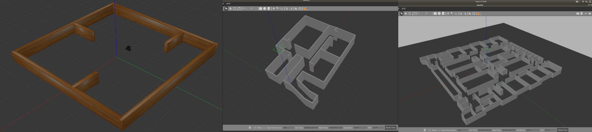
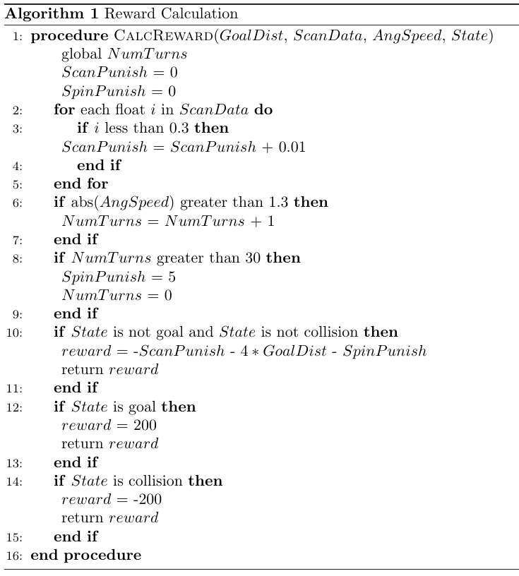
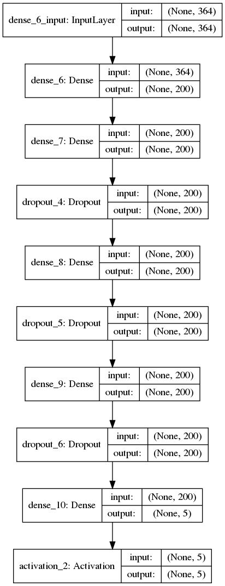
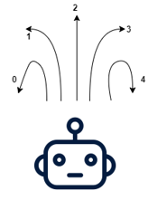

Deep Q-Learning For Indoor Autonomous Agent Navigation
The goal of this project was to investigate the effectiveness of using a Deep Q-Learning Network (DQN) as an effective method for autonomous agent navigation in an unknown environment. The agent would be trained in a physics-consistent simulation environment known as Gazebo. In this environment, three different training stages were constructed, each with increased complexity was compared to the previous. These three training stages can be seen in the figure below. Note the the least complex stage is on the left, and the most complex stage is on the right.
The first two stages had 3000 training episodes run on them, while the last stage had 6000 training episodes run on it. A single training episode could end in three possible outcomes, the agent reaches the goal, the agent has a collision, or the episode times out. Finding the goal rewarded the agent with a +200 reward, while a collision incurred a -200 punishment. During each individual update step, the agent could be punished or rewarded based on a variety of other criterion. The image below outlines the algorithm used to calculate the overall reward for a given time step.
The overall DQN model architecture was composed of an input layer, three dense layers, and an output layer. Dropout layers were added after dense layers in an effort to reduce over fitting. The overall model architecture can be seen in the image below.
The input layer shape was 364 which corresponded to 360 for the LIDAR scan points, one for the calculated reward, one for the action taken to receive that reward, and one each the angular and linear velocities. The output layer was composed of five neurons instantiated with a linear activation function. This resulted the model producing a number between 0 and 4, corresponding to the next action to be taken. 0 was left with no forward motion, 1 was left with some forward motion, 2 was full forward, 3 was right with some forward motion, and 4 was right with no forward motion. This mapping can be seen in the image below.
Episodic Training Time Lapse
The YouTube video below depicts a time lapse of a few training episodes running in each training stage.
Project Software
This project used heavily modified ROS packages from ROBOTIS to construct the overall simulation environment. The modified software can be found within this GitHub repository. An IEEE style report was also generated for this project and can be found here.